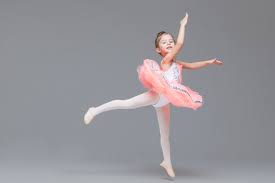
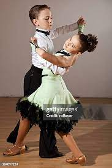
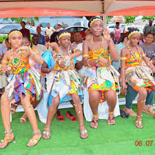

hip hop
Hip-hop or hip hop (originally disco rap) is a popular music genre that emerged in the early 1970s from the African-American community of New York City.
lets dance and have fun
Hip-hop or hip hop (originally disco rap) is a popular music genre that emerged in the early 1970s from the African-American community of New York City.
an artistic dance form performed to music, using precise and highly formalized set steps and gestures. Classical ballet, which originated in Renaissance Italy and established its present form during the 19th century, is characterized by light, graceful movements and the use of pointe shoes with reinforced toes.
Classical dance encompasses various forms, including the Indian classical dances like Bharatanatyam, Kathak, Odissi, and Kathakali, as well as ballet, which originated in Italy during the Renaissance. Indian classical dance styles are rooted in the Natya Shastra, a Sanskrit text, and often express Hindu religious themes and spiritual ideas. Ballet, on the other hand, developed in European courts, particularly in France, and is known for its theatrical and storytelling aspects.
Freestyle dance is a form of dance where the dancer improvises and creates their own movements spontaneously, rather than following a pre-set choreography. It's about interpreting music and expressing oneself in the moment. This can involve a variety of styles and techniques, often drawing from foundational street dance styles like hip-hop, locking, and popping.
a free expressive style of dancing that developed in the early 20th century as a reaction to classical ballet. In recent years it has included elements not usually associated with dance, such as speech and film.
a ballroom dance originating in Buenos Aires, characterized by marked rhythms and postures and abrupt pauses.
Borborbor is a traditional West-African dance and music form performed by the people of the Volta Region of Ghana in the 1950s. Performed at cultural events like festivals and funerals, the dance involves vigorous waist twisting, particularly by women, accompanied by drumming, singing, and sometimes Christian-themed lyrics. Borborbor is a communal, recreational dance that provides cultural entertainment and has also evolved to incorporate new styles over time.
watch kids dancing your favourite dance